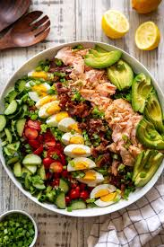

Salmon Cobb Salad

A hearty meal that's both healthy and full of protein. This is great for people working on their weightloss journey without cutting out any deliciousness in their life. It only requires 30 minutes of your time while providing 10 servings with 250 calories per serving size.
Ingredients
- ¾ cup buttermilk
- ½ cup mayonnaise
- ¼ cup minced shallot
- 3 tablespoons chopped fresh dill
- 1 tablespoon lemon juice
- ½ teaspoon salt
Steps
- Whisk buttermilk, mayonnaise, shallot, dill, lemon juice, and salt together in a bowl until dressing is smooth; refrigerate.
- Mix lettuce, bacon, avocado, eggs, and salmon together in a bowl. Add dressing and toss until coated; season with black pepper.